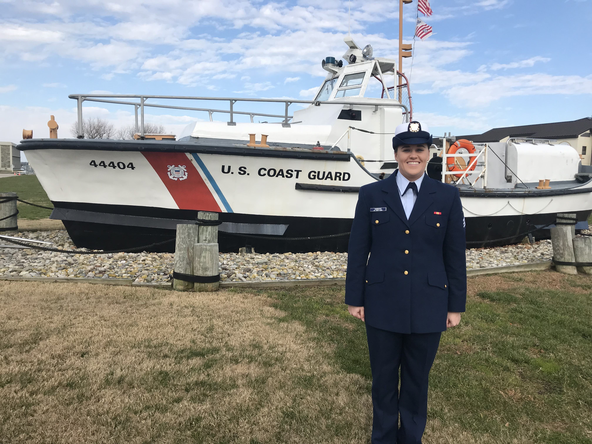

About Me

I served 8 years of active duty in the United States Coast Guard and earned a bachelor's degree in Criminal Justice from Southern New Hampshire University. During my military career, I worked in intelligence, including Signals Intelligence (SIGINT) supporting the National Security Agency (NSA) and counterterrorism operations in Sterling, Virginia. These experiences helped me develop strong analytical, communication, leadership, and problem-solving skills while working in high-pressure environments. I am currently continuing my education at Middle Georgia State University, studying Information Technology while also exploring opportunities in education and teaching. My goal is to find a meaningful career where I can use my experience and skills to make a positive impact.
Career Goals
- Information Technology — Continue developing my technical skills through my coursework at Middle Georgia State University.
- Education — Explore opportunities in teaching, particularly physical education and elementary education.
- Professional Growth — Apply the leadership, analytical, and communication skills I developed during my military service to a meaningful civilian career.
Current Projects & Education
I am currently attending Middle Georgia State University, where I am taking courses in Python Programming, Web Development, and Human-Computer Interaction. Alongside my education, I am also working toward opening my own sports card and collectibles shop in Macon, Georgia. This is a personal project that combines my interest in sports cards with my goal of becoming a small business owner. Right now, I am exploring the planning, funding, and requirements involved in starting the business.